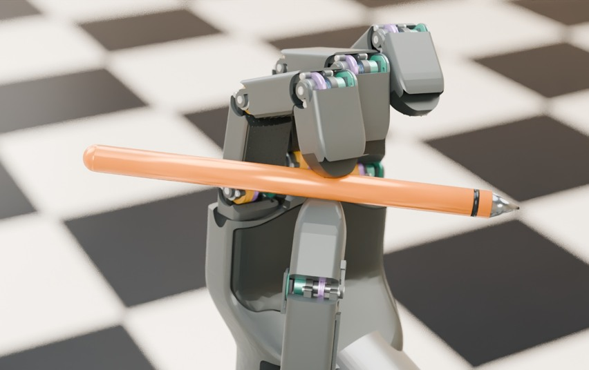
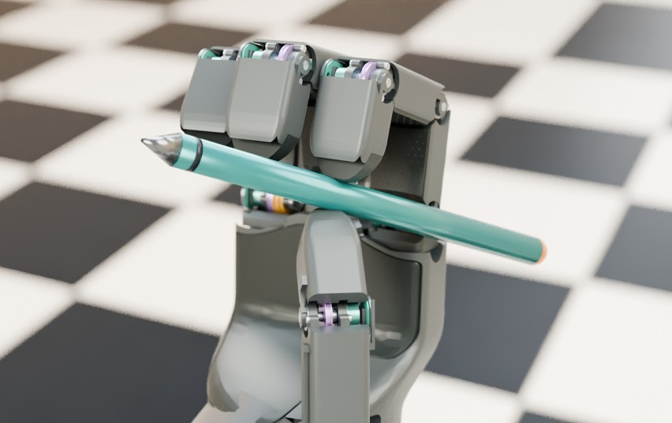

Tüm koşulların birlikte sağlandığı koşu sayısı
MuJoCo · Robotik simülasyon
İtme altında iki
kalemle yürüyüş
Bir insansı robot iki kalemi parmak uçlarında hareket ettirirken beklenmedik bir itmeden sonra nereye basar?
Kayıt 924 · olay ölçümleri
İkinci itme
- Tepe yükü
- 107,7 N
- Yükte kalma
- 1,82 s
- Yanal adım
- 29,4 cm
- Sol / sağ kalem
- 33,9° / 33,9°
On beş koşuda denge
Koşu tablosunu aç ↗Denetleyici sabitlendikten sonra ayrılan yeni zamanlamalarda başarı
Filmde beş itmeye rağmen alınan net ileri yol


İtme gerçekleştiğinde
Denetleyici yanal yükü robotun hareketinden kestirir. O anda farklı ayak basışlarını simüle eder. Beş itmenin her birinde yük kalktıktan 2,16–2,25 saniye sonra robot ilk ileri adım için ayağını yerden kaldırdı.
Yöntemi oku ↗İtme kaldırıldığında
İkinci itmenin çıkarıldığı eşlenmiş koşuyla karşılaştırıldığında belin konumu, tepe yükünün sonunda itme yönünde 40,0 cm farklıydı. Bu deneylerde yanal kuvvetler 60–115 N aralığında kaldı. 1042, 1052 ve 1071 numaralı koşular denge sınırında durdu.
Sayısal sonuçları aç ↗